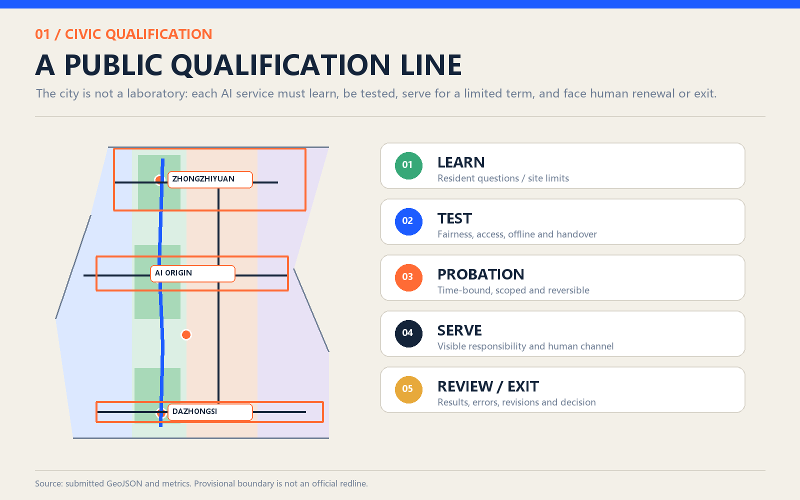

ENROL / LEARN
Residents define problems, site facts and prohibited uses.
The city is not AI's test subject. The city is its teacher.
The Civic Apprentice Line is not a technology showcase. It is a line of public responsibility. Learn before taking a post; be tested before serving; disclose before expanding; always allow handover and exit.
The Civic Apprentice Line makes responsibility visible, contestable and reversible. Technology learns civic limits, passes fairness, access, offline and handover tests, then serves only within a bounded probation. People and professionals decide renewal, revision or exit.
Residents define problems, site facts and prohibited uses.
Safety, fairness, legibility and human fallback.
Bounded, reversible and never equivalent to approval.
Accountable owner, staffed path and no-AI option stay visible.
Publish outcomes, errors, appeals and revisions.

Mobility
Community service
AI Origin
Heritage park
Xiaoyue River wing
Blue-green space
Public nodes
Service wing
Line-wide nodes
Community interface
AI Origin
Enrollment/Transcript